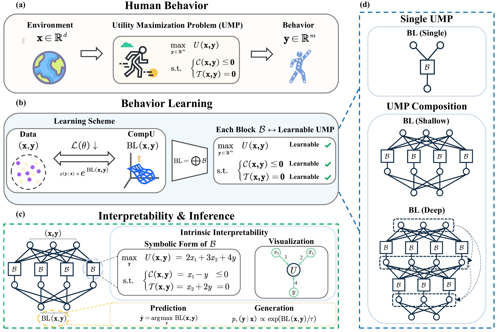

Behavior Learning (BL)
Abstract
Inspired by behavioral science, we propose Behavior Learning (BL), a novel general-purpose machine learning framework that learns interpretable and identifiable optimization structures from data, ranging from single optimization problems to hierarchical compositions. It unifies predictive performance, intrinsic interpretability, and identifiability, with broad applicability to scientific domains involving optimization. BL parameterizes a compositional utility function built from intrinsically interpretable modular blocks, which induces a data distribution for prediction and generation. Each block represents and can be written in symbolic form as a utility maximization problem (UMP), a foundational paradigm in behavioral science and a universal framework of optimization. BL supports architectures ranging from a single UMP to hierarchical compositions, the latter modeling hierarchical optimization structures. Its smooth and monotone variant (IBL) guarantees identifiability. Theoretically, we establish the universal approximation property of BL, and analyze the M-estimation properties of IBL. Empirically, BL demonstrates strong predictive performance, intrinsic interpretability and scalability to high-dimensional data.